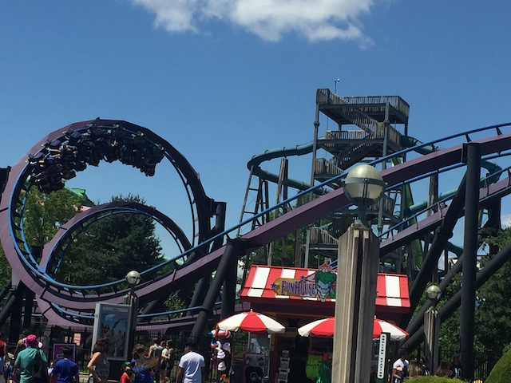
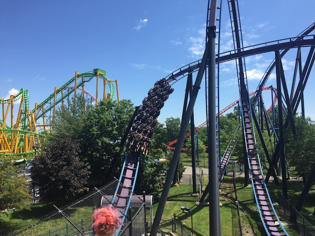
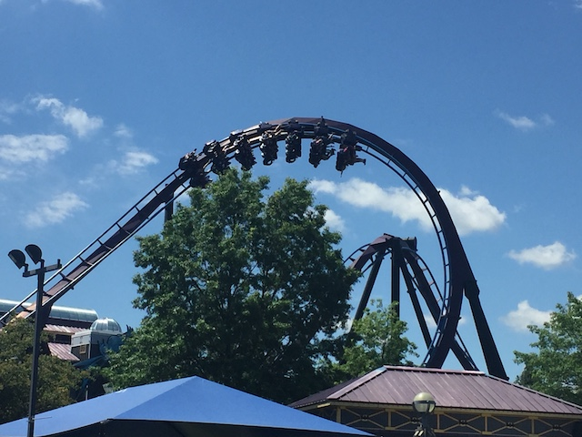
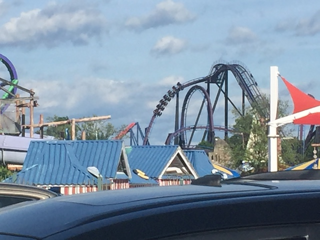
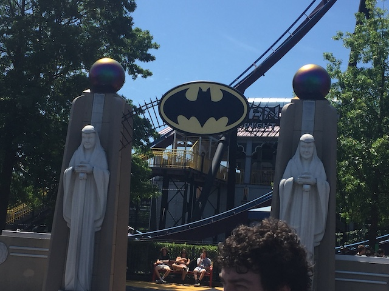

| |
Batman: The Dark Knight Review

We're here at Six Flags New England. Today's ride we'll be reviewing for you is Batman: The Dark Knight. The park's B&M Floorless Coaster. Now normally, a B&M Floorless Coaster would easily be the star attraction at a park, but between this being one of the weaker B&Ms, plus Superman and Wicked Cyclone being in the same park, that's not the case here. But I still like the ride, even if Batman: The Dark Knight is one of the weaker B&M Floorless Coasters. All right. Let's ride. After getting in the cars, the airhorn blows, the floor drops, and the gates open, and we are on our way. We climb up the lifthill, getting a very nice view of the Conneticuit River and into the state of Conneticuit. Check it out. I can see another state from this ride. =) Anyways, we reach the top and head into a typical twisted B&M first drop. Wee!!! We're gathering lots of speed on this ride!! Wee!!! That just leads us straight into a vertical loop. It's fun and all, but there's nothing really special about this loop. It's too fast for hangtime and too slow for some real tasty positive Gs. So that's a bummer. But hey, we're still having fun. We've got some nice speed going for us here. Next up, we head straight into a dive loop. Its fun and all. Not really intense, but there's a couple of lateral Gs at the bottom of the drop. Those are fun. We then rise up into a turnaround. Its fun and all and it even features a cool visual of threading the loop we were just in, but this element isn't crazy or anything like that. But oh well. We drop back down and head up into a Heartline Twist. Oh boy, these are always fun elements. Usually. And to be fair to the ride, this one is pretty good. It's not weak and lame like on Silver Bullet. It may not be the most insane heartline twist ever, but this is an element where you can't go wrong, so I do like this element. Plus its got a really nice visual of threading the Dive Loop. That's fun. We then head straight around a curve and head straight into a corkscrew. It's fun and its got some whip. We then head around another curve before shoving straight into another corkscrew. The corkscrews do interlock, so again, it's got some nice visuals for the ride, even if the elements are just ok. We then head around a nice turn, and into the brake run. That's it. This ride is literally just nothing but inversions. Aside from a fun turnaround, that's literally it. It's a fun ride and all, but it's definetly one of the weaker B&M Floorless Coasters. I think the main problem people have with the ride is that it looks so forceful and compact, so when they get just an average ride, they feel dissapointed and forget about it. So that's a bummer. It's still a fun ride and all and I'd recommend it if you're going to Six Flags New England. Just don't expect it to be the best or anything.
7/10
Location: Six Flags New England
Opened: 2002
Built by: B&M
Last Ridden: June 13, 2021
Batman: The Dark Knight Photos









Home
|